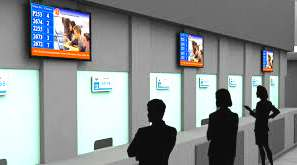

تُقدم شركة بيوت تك أحدث أنظمة إدارة الطوابير ونداء العملاء (Queuing & Call Systems) بالتصميم العصري والتكنولوجيا المتطورة للمراكز الخدمية الحكومية، البنوك، المستشفيات، وشركات الاتصالات. يضم النظام منصات سحب التذاكر التفاعلية (Touch Kiosks)، الشاشات الرقمية (Digital Signage)، وحدات العرض المرئي والصوتي باللغتين العربية والإنجليزية، ووحدة التقارير والمراقبة الشاملة (Full Reporting & Monitoring Module).

اضغط على أي مرحلة في المخطط الهيكلي لاستعراض دورها الهندسي في تكامل المنظومة
جهاز Kiosk تفاعلي بشاشة لمس وطابعة حرارية سريعة يتيح للمواطن أو العميل اختيار نوع الخدمة والحصول على تذكرة مرقمة فوراً.
شاشات عرض عالية الوضوح تعرض أرقام التذاكر وأسهم توجه العميل للشباك المحدد، مع عرض محتوى إعلاني أو إرشادي ونداء صوتي واضح.
شاشة فرعية أعلى كل شباك خدمة مع لوحة أزرار (Keypad) أو برنامج حاسوب أمام الموظف لنداء العميل التالي أو تحويله لشباك آخر.
لوحة تحكم للإدارة تعرض متوسط زمن انتظار العميل، زمن تقديم الخدمة لكل موظف، وذروة الازدحام اليومية والشهرية.
أداة هندسية تفاعلية تتيح لك محاكاة النظام وحساب المعدات المطلوبة لمشروعك بدقة قبل طلب المعاينة
نعتمد على أقوى العلامات التجارية العالمية المعتمدة لضمان استدامة التشغيل والاعتماد لدى الاستشاريين
كشك معدني أنيق مزود بشاشة لمس صناعية وطابعة تذاكر حرارية سريعة بقطع أوتوماتيكي للورق.
شاشات عرض مركزية وفرعية (تصل إلى 19 شاشة أو أكثر لكل مبنى) لعرض النداءات والمحتوى الرقمي.
وحدات طلب العملاء أمام كل شباك تدعم النداء، التكرار، التحويل لقسم آخر، وتقييم مستوى الخدمة.
نطق صوتي آلي واضح باللغة العربية والإنجليزية لرقم التذكرة ورقم الشباك عبر السماعات.
واجهة رسومية مخصصة تحمل شعار وهوية المؤسسة وتفصل بين فئات العملاء (عادي / VIP / ذوي الهمم).
إصدار تقارير تفصيلية لحظية وتاريخية لقياس كفاءة الموظفين ومستوى رضا المتعاملين.